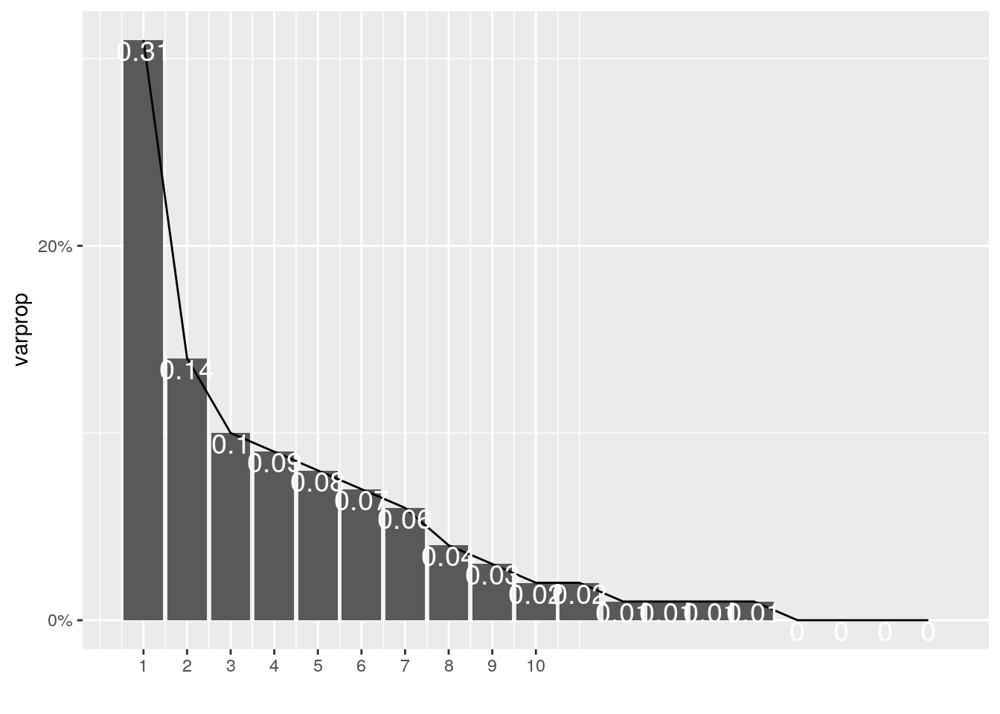

A knitted R Markdown document (ideally HTML) and the raw R Markdown file (as .Rmd) should both be submitted to Canvas by 11:59pm on 10/11/2020. These two documents will be graded jointly, so they must be consistent (i.e., don’t change the R Markdown file without also updating the knitted document).
The text of the document should provide a narrative structure around your code/output. All results presented must have corresponding code. Any answers/results/plots etc. given without the corresponding R code that generated the result will not be considered. Furthermore, all code contained in your final project document must work correctly (knit early, knit often)! Please do not include any extraneous code or code which produces error messages. (Code that produces warnings is acceptable, as long as you understand what the warnings mean!)
Find two (!) datasets with one variable in common (e.g., dates, times, states, counties, countries, sports players), both with at least 50 observations (i.e., rows) in each. Please think very carefully about whether it makes sense to combine your datasets! If you find one dataset with 50 patients and it has their age, and you find another dataset with 50 different patients that has their ages, it makes no sense to join them based on age (you would just be pairing up random people of the same age).
When combined, the resulting/final dataset must have at least 4 different variables (at least 3 numeric) in addition to the common variable (i.e., five variables total).
You can have as many variables as you would like! If you found two datasets that you like but they don't have enough variables, find a third dataset with the same common variable and join all three.
If the datasets are not tidy, you will need to reshape them so that every observation has its own row and every variable its own column. If the datasets are both already tidy, you will make them untidy with pivot_wider()/spread() and then tidy them again with pivot_longer/gather() to demonstrate your use of the functions. It's fine to wait until you have your descriptives to use these functions (e.g., you might want to pivot_wider() to rearrange the data to make your descriptive statistics easier to look at); it's fine long as you use them at least once!
Depending on your datasets, it might be a good idea to do this before joining. For example, if you have a dataset you like with multiple measurements per year, but you want to join by year, you could average over your numeric variables to get means/year, do counts for your categoricals to get a counts/year, etc.
If your data sets are already tidy, demonstrate the use of pivot_longer()/gather() and pivot_wider()/spread() on all or part of your data at some point in this document (e.g., after you have generated summary statistics in part 3, make a table of them wide instead of long).
# Introduction- I have selected two datasets from a free
# global website called data.world, they provide recent data
# surrounding COVID-19 statistics. One dataset provides
# information related to case and death rates per state and
# contains the following variables: state,date,total
# populatio, cumulative cases,cumulative cases per
# 100,000,cumulative deaths,cumulative deaths per 100,000,
# new cases, new cases 7 day rolling average, new deaths, new
# deaths 7 day rolling average, new deaths per 100,000, and
# new cases per 100,000. The second dataset provides
# information related to confirmed cases and deaths for
# specific counties within states and contains the variables:
# last update, location type, state, county name, county name
# long, fips code, lat, lon, NCHS urbanization,total
# population,confirmed cases,confirmed cases per
# 100,000,deaths, and deaths per 100,000.#
library(tidyverse)
library(cluster)
state.set <- read.csv("3_cases_and_deaths_by_state_timeseries.csv")
county.set <- read.csv("1_county_level_confirmed_cases.csv")
glimpse(state.set)## Rows: 14,896
## Columns: 13
## $ state <fct> Alabama, Alabama, Alabama, Alabama, Ala…
## $ date <fct> 2020-01-22, 2020-01-23, 2020-01-24, 202…
## $ total_population <dbl> 4887871, 4887871, 4887871, 4887871, 488…
## $ cumulative_cases <int> 0, 0, 0, 0, 0, 0, 0, 0, 0, 0, 0, 0, 0, …
## $ cumulative_cases_per_100_000 <dbl> 0, 0, 0, 0, 0, 0, 0, 0, 0, 0, 0, 0, 0, …
## $ cumulative_deaths <int> 0, 0, 0, 0, 0, 0, 0, 0, 0, 0, 0, 0, 0, …
## $ cumulative_deaths_per_100_000 <dbl> 0, 0, 0, 0, 0, 0, 0, 0, 0, 0, 0, 0, 0, …
## $ new_cases <dbl> NA, 0, 0, 0, 0, 0, 0, 0, 0, 0, 0, 0, 0,…
## $ new_cases_7_day_rolling_avg <dbl> NA, NA, NA, NA, NA, 0, 0, 0, 0, 0, 0, 0…
## $ new_deaths <dbl> NA, 0, 0, 0, 0, 0, 0, 0, 0, 0, 0, 0, 0,…
## $ new_deaths_7_day_rolling_avg <dbl> NA, NA, NA, NA, NA, 0, 0, 0, 0, 0, 0, 0…
## $ new_deaths_per_100_000 <dbl> NA, 0, 0, 0, 0, 0, 0, 0, 0, 0, 0, 0, 0,…
## $ new_cases_per_100_000 <dbl> NA, 0, 0, 0, 0, 0, 0, 0, 0, 0, 0, 0, 0,…glimpse(county.set)## Rows: 3,264
## Columns: 14
## $ last_update <fct> 2020-10-14 18:24:22 UTC, 2020-10-14 18:24:22 UTC…
## $ location_type <fct> county, county, county, county, county, county, …
## $ state <fct> Alabama, Alabama, Alabama, Alabama, Alabama, Ala…
## $ county_name <fct> Autauga, Baldwin, Barbour, Bibb, Blount, Bullock…
## $ county_name_long <fct> "Autauga, Alabama, US", "Baldwin, Alabama, US", …
## $ fips_code <int> 1001, 1003, 1005, 1007, 1009, 1011, 1013, 1015, …
## $ lat <dbl> 32.53953, 30.72775, 31.86826, 32.99642, 33.98211…
## $ lon <dbl> -86.64408, -87.72207, -85.38713, -87.12511, -86.…
## $ NCHS_urbanization <fct> Medium metro, Small metro, Non-core, Large fring…
## $ total_population <dbl> 55200, 208107, 25782, 22527, 57645, 10352, 20025…
## $ confirmed <int> 1928, 6270, 950, 744, 1750, 628, 977, 3922, 1256…
## $ confirmed_per_100000 <dbl> 3492.75, 3012.87, 3684.74, 3302.70, 3035.82, 606…
## $ deaths <int> 28, 66, 9, 13, 23, 16, 40, 57, 43, 14, 31, 12, 1…
## $ deaths_per_100000 <dbl> 50.72, 31.71, 34.91, 57.71, 39.90, 154.56, 199.7…states <- state.set %>% na.omit
counties <- county.set %>% na.omit
untidy_states <- states %>% pivot_wider(names_from = "state",
values_from = "total_population")
glimpse(untidy_states)## Rows: 11,633
## Columns: 63
## $ date <fct> 2020-01-27, 2020-01-28, 2020-01-29, 202…
## $ cumulative_cases <int> 0, 0, 0, 0, 0, 0, 0, 0, 0, 0, 0, 0, 0, …
## $ cumulative_cases_per_100_000 <dbl> 0, 0, 0, 0, 0, 0, 0, 0, 0, 0, 0, 0, 0, …
## $ cumulative_deaths <int> 0, 0, 0, 0, 0, 0, 0, 0, 0, 0, 0, 0, 0, …
## $ cumulative_deaths_per_100_000 <dbl> 0, 0, 0, 0, 0, 0, 0, 0, 0, 0, 0, 0, 0, …
## $ new_cases <dbl> 0, 0, 0, 0, 0, 0, 0, 0, 0, 0, 0, 0, 0, …
## $ new_cases_7_day_rolling_avg <dbl> 0, 0, 0, 0, 0, 0, 0, 0, 0, 0, 0, 0, 0, …
## $ new_deaths <dbl> 0, 0, 0, 0, 0, 0, 0, 0, 0, 0, 0, 0, 0, …
## $ new_deaths_7_day_rolling_avg <dbl> 0, 0, 0, 0, 0, 0, 0, 0, 0, 0, 0, 0, 0, …
## $ new_deaths_per_100_000 <dbl> 0, 0, 0, 0, 0, 0, 0, 0, 0, 0, 0, 0, 0, …
## $ new_cases_per_100_000 <dbl> 0, 0, 0, 0, 0, 0, 0, 0, 0, 0, 0, 0, 0, …
## $ Alabama <dbl> 4887871, 4887871, 4887871, 4887871, 488…
## $ Alaska <dbl> 737438, 737438, 737438, 737438, 737438,…
## $ Arizona <dbl> NA, NA, NA, NA, NA, NA, NA, NA, NA, NA,…
## $ Arkansas <dbl> 3013825, 3013825, 3013825, 3013825, 301…
## $ California <dbl> NA, NA, NA, NA, NA, NA, NA, NA, NA, NA,…
## $ Colorado <dbl> 5695564, 5695564, 5695564, 5695564, 569…
## $ Connecticut <dbl> 3572665, 3572665, 3572665, 3572665, 357…
## $ Delaware <dbl> 967171, 967171, 967171, 967171, 967171,…
## $ `District of Columbia` <dbl> 702455, 702455, 702455, 702455, 702455,…
## $ Florida <dbl> 21299325, 21299325, 21299325, 21299325,…
## $ Georgia <dbl> 10519475, 10519475, 10519475, 10519475,…
## $ Hawaii <dbl> 1420491, 1420491, 1420491, 1420491, 142…
## $ Idaho <dbl> 1754208, 1754208, 1754208, 1754208, 175…
## $ Illinois <dbl> NA, NA, NA, NA, NA, NA, NA, NA, NA, NA,…
## $ Indiana <dbl> 6691878, 6691878, 6691878, 6691878, 669…
## $ Iowa <dbl> 3156145, 3156145, 3156145, 3156145, 315…
## $ Kansas <dbl> 2911510, 2911510, 2911510, 2911510, 291…
## $ Kentucky <dbl> 4468402, 4468402, 4468402, 4468402, 446…
## $ Louisiana <dbl> 4659978, 4659978, 4659978, 4659978, 465…
## $ Maine <dbl> 1338404, 1338404, 1338404, 1338404, 133…
## $ Maryland <dbl> 6042718, 6042718, 6042718, 6042718, 604…
## $ Massachusetts <dbl> 6902149, 6902149, NA, NA, NA, NA, NA, N…
## $ Michigan <dbl> 9995915, 9995915, 9995915, 9995915, 999…
## $ Minnesota <dbl> 5611179, 5611179, 5611179, 5611179, 561…
## $ Mississippi <dbl> 2986530, 2986530, 2986530, 2986530, 298…
## $ Missouri <dbl> 6126452, 6126452, 6126452, 6126452, 612…
## $ Montana <dbl> 1062305, 1062305, 1062305, 1062305, 106…
## $ Nebraska <dbl> 1929268, 1929268, 1929268, 1929268, 192…
## $ Nevada <dbl> 3034392, 3034392, 3034392, 3034392, 303…
## $ `New Hampshire` <dbl> 1356458, 1356458, 1356458, 1356458, 135…
## $ `New Jersey` <dbl> 8908520, 8908520, 8908520, 8908520, 890…
## $ `New Mexico` <dbl> 2095428, 2095428, 2095428, 2095428, 209…
## $ `New York` <dbl> 19542209, 19542209, 19542209, 19542209,…
## $ `North Carolina` <dbl> 10383620, 10383620, 10383620, 10383620,…
## $ `North Dakota` <dbl> 760077, 760077, 760077, 760077, 760077,…
## $ Ohio <dbl> 11689442, 11689442, 11689442, 11689442,…
## $ Oklahoma <dbl> 3943079, 3943079, 3943079, 3943079, 394…
## $ Oregon <dbl> 4190713, 4190713, 4190713, 4190713, 419…
## $ Pennsylvania <dbl> 12807060, 12807060, 12807060, 12807060,…
## $ `Puerto Rico` <dbl> 3195153, 3195153, 3195153, 3195153, 319…
## $ `Rhode Island` <dbl> 1057315, 1057315, 1057315, 1057315, 105…
## $ `South Carolina` <dbl> 5084127, 5084127, 5084127, 5084127, 508…
## $ `South Dakota` <dbl> 882235, 882235, 882235, 882235, 882235,…
## $ Tennessee <dbl> 6770010, 6770010, 6770010, 6770010, 677…
## $ Texas <dbl> 28701845, 28701845, 28701845, 28701845,…
## $ Utah <dbl> 3161105, 3161105, 3161105, 3161105, 316…
## $ Vermont <dbl> 626299, 626299, 626299, 626299, 626299,…
## $ Virginia <dbl> 8517685, 8517685, 8517685, 8517685, 851…
## $ Washington <dbl> NA, NA, NA, NA, NA, NA, NA, NA, NA, NA,…
## $ `West Virginia` <dbl> 1805832, 1805832, 1805832, 1805832, 180…
## $ Wisconsin <dbl> 5813568, 5813568, 5813568, 5813568, 581…
## $ Wyoming <dbl> 577737, 577737, 577737, 577737, 577737,…untidy_states %>% pivot_longer(cols = c(12:63), names_to = "state",
values_to = "total_population") %>% glimpse()## Rows: 604,916
## Columns: 13
## $ date <fct> 2020-01-27, 2020-01-27, 2020-01-27, 202…
## $ cumulative_cases <int> 0, 0, 0, 0, 0, 0, 0, 0, 0, 0, 0, 0, 0, …
## $ cumulative_cases_per_100_000 <dbl> 0, 0, 0, 0, 0, 0, 0, 0, 0, 0, 0, 0, 0, …
## $ cumulative_deaths <int> 0, 0, 0, 0, 0, 0, 0, 0, 0, 0, 0, 0, 0, …
## $ cumulative_deaths_per_100_000 <dbl> 0, 0, 0, 0, 0, 0, 0, 0, 0, 0, 0, 0, 0, …
## $ new_cases <dbl> 0, 0, 0, 0, 0, 0, 0, 0, 0, 0, 0, 0, 0, …
## $ new_cases_7_day_rolling_avg <dbl> 0, 0, 0, 0, 0, 0, 0, 0, 0, 0, 0, 0, 0, …
## $ new_deaths <dbl> 0, 0, 0, 0, 0, 0, 0, 0, 0, 0, 0, 0, 0, …
## $ new_deaths_7_day_rolling_avg <dbl> 0, 0, 0, 0, 0, 0, 0, 0, 0, 0, 0, 0, 0, …
## $ new_deaths_per_100_000 <dbl> 0, 0, 0, 0, 0, 0, 0, 0, 0, 0, 0, 0, 0, …
## $ new_cases_per_100_000 <dbl> 0, 0, 0, 0, 0, 0, 0, 0, 0, 0, 0, 0, 0, …
## $ state <chr> "Alabama", "Alaska", "Arizona", "Arkans…
## $ total_population <dbl> 4887871, 737438, NA, 3013825, NA, 56955…# I have demonstrated my ability to tidy data by using
# pivot_wider on my first data set to make it messy and then
# re-tidying my dataset using the pivot_longer section.
# Essentially, I made separate columns for each state and
# their population and then re-organized into singular
# columns.#Join your 2+ separate data sources into a single dataset based on a common ID variable! If you can't find a good pair datasets to join, you may split one main dataset into two different datasets with a common ID variable in each, and then join them back together based on that common ID, but this is obviously less than ideal.
glimpse(states)## Rows: 13,570
## Columns: 13
## $ state <fct> Alabama, Alabama, Alabama, Alabama, Ala…
## $ date <fct> 2020-01-27, 2020-01-28, 2020-01-29, 202…
## $ total_population <dbl> 4887871, 4887871, 4887871, 4887871, 488…
## $ cumulative_cases <int> 0, 0, 0, 0, 0, 0, 0, 0, 0, 0, 0, 0, 0, …
## $ cumulative_cases_per_100_000 <dbl> 0, 0, 0, 0, 0, 0, 0, 0, 0, 0, 0, 0, 0, …
## $ cumulative_deaths <int> 0, 0, 0, 0, 0, 0, 0, 0, 0, 0, 0, 0, 0, …
## $ cumulative_deaths_per_100_000 <dbl> 0, 0, 0, 0, 0, 0, 0, 0, 0, 0, 0, 0, 0, …
## $ new_cases <dbl> 0, 0, 0, 0, 0, 0, 0, 0, 0, 0, 0, 0, 0, …
## $ new_cases_7_day_rolling_avg <dbl> 0, 0, 0, 0, 0, 0, 0, 0, 0, 0, 0, 0, 0, …
## $ new_deaths <dbl> 0, 0, 0, 0, 0, 0, 0, 0, 0, 0, 0, 0, 0, …
## $ new_deaths_7_day_rolling_avg <dbl> 0, 0, 0, 0, 0, 0, 0, 0, 0, 0, 0, 0, 0, …
## $ new_deaths_per_100_000 <dbl> 0, 0, 0, 0, 0, 0, 0, 0, 0, 0, 0, 0, 0, …
## $ new_cases_per_100_000 <dbl> 0, 0, 0, 0, 0, 0, 0, 0, 0, 0, 0, 0, 0, …glimpse(counties)## Rows: 3,192
## Columns: 14
## $ last_update <fct> 2020-10-14 18:24:22 UTC, 2020-10-14 18:24:22 UTC…
## $ location_type <fct> county, county, county, county, county, county, …
## $ state <fct> Alabama, Alabama, Alabama, Alabama, Alabama, Ala…
## $ county_name <fct> Autauga, Baldwin, Barbour, Bibb, Blount, Bullock…
## $ county_name_long <fct> "Autauga, Alabama, US", "Baldwin, Alabama, US", …
## $ fips_code <int> 1001, 1003, 1005, 1007, 1009, 1011, 1013, 1015, …
## $ lat <dbl> 32.53953, 30.72775, 31.86826, 32.99642, 33.98211…
## $ lon <dbl> -86.64408, -87.72207, -85.38713, -87.12511, -86.…
## $ NCHS_urbanization <fct> Medium metro, Small metro, Non-core, Large fring…
## $ total_population <dbl> 55200, 208107, 25782, 22527, 57645, 10352, 20025…
## $ confirmed <int> 1928, 6270, 950, 744, 1750, 628, 977, 3922, 1256…
## $ confirmed_per_100000 <dbl> 3492.75, 3012.87, 3684.74, 3302.70, 3035.82, 606…
## $ deaths <int> 28, 66, 9, 13, 23, 16, 40, 57, 43, 14, 31, 12, 1…
## $ deaths_per_100000 <dbl> 50.72, 31.71, 34.91, 57.71, 39.90, 154.56, 199.7…covid.dataset <- states %>% full_join(counties, by = c(state = "state"))
glimpse(covid.dataset)## Rows: 832,926
## Columns: 26
## $ state <fct> Alabama, Alabama, Alabama, Alabama, Ala…
## $ date <fct> 2020-01-27, 2020-01-27, 2020-01-27, 202…
## $ total_population.x <dbl> 4887871, 4887871, 4887871, 4887871, 488…
## $ cumulative_cases <int> 0, 0, 0, 0, 0, 0, 0, 0, 0, 0, 0, 0, 0, …
## $ cumulative_cases_per_100_000 <dbl> 0, 0, 0, 0, 0, 0, 0, 0, 0, 0, 0, 0, 0, …
## $ cumulative_deaths <int> 0, 0, 0, 0, 0, 0, 0, 0, 0, 0, 0, 0, 0, …
## $ cumulative_deaths_per_100_000 <dbl> 0, 0, 0, 0, 0, 0, 0, 0, 0, 0, 0, 0, 0, …
## $ new_cases <dbl> 0, 0, 0, 0, 0, 0, 0, 0, 0, 0, 0, 0, 0, …
## $ new_cases_7_day_rolling_avg <dbl> 0, 0, 0, 0, 0, 0, 0, 0, 0, 0, 0, 0, 0, …
## $ new_deaths <dbl> 0, 0, 0, 0, 0, 0, 0, 0, 0, 0, 0, 0, 0, …
## $ new_deaths_7_day_rolling_avg <dbl> 0, 0, 0, 0, 0, 0, 0, 0, 0, 0, 0, 0, 0, …
## $ new_deaths_per_100_000 <dbl> 0, 0, 0, 0, 0, 0, 0, 0, 0, 0, 0, 0, 0, …
## $ new_cases_per_100_000 <dbl> 0, 0, 0, 0, 0, 0, 0, 0, 0, 0, 0, 0, 0, …
## $ last_update <fct> 2020-10-14 18:24:22 UTC, 2020-10-14 18:…
## $ location_type <fct> county, county, county, county, county,…
## $ county_name <fct> Autauga, Baldwin, Barbour, Bibb, Blount…
## $ county_name_long <fct> "Autauga, Alabama, US", "Baldwin, Alaba…
## $ fips_code <int> 1001, 1003, 1005, 1007, 1009, 1011, 101…
## $ lat <dbl> 32.53953, 30.72775, 31.86826, 32.99642,…
## $ lon <dbl> -86.64408, -87.72207, -85.38713, -87.12…
## $ NCHS_urbanization <fct> Medium metro, Small metro, Non-core, La…
## $ total_population.y <dbl> 55200, 208107, 25782, 22527, 57645, 103…
## $ confirmed <int> 1928, 6270, 950, 744, 1750, 628, 977, 3…
## $ confirmed_per_100000 <dbl> 3492.75, 3012.87, 3684.74, 3302.70, 303…
## $ deaths <int> 28, 66, 9, 13, 23, 16, 40, 57, 43, 14, …
## $ deaths_per_100000 <dbl> 50.72, 31.71, 34.91, 57.71, 39.90, 154.…Create summary statistics
Use all six core dplyr functions (filter, select, arrange, group_by, mutate, summarize) to manipulate and explore your dataset. For mutate, create a new variable that is a function of at least one other variable, preferably using a dplyr vector function (see dplyr cheatsheet). It's totally fine to use the _if, _at, _all versions of mutate/summarize instead (indeed, it is encouraged if you have lots of variables)
Create summary statistics (mean, sd, var, n, quantile, min, max, n_distinct, cor, etc) for each of your numeric variables both overall and after grouping by one of your categorical variables (either together or one-at-a-time; if you have two categorical variables, try to include at least one statistic based on a grouping of two categorical variables simultaneously). If you do not have any categorical variables, create one using mutate (e.g., with case_when or ifelse) to satisfy the group_by requirements above. Ideally, you will find a way to show these summary statistics in an easy-to-read table (e.g., by reshaping). (You might explore the kable package for making pretty tables!) If you have lots of numeric variables (e.g., 10+), or your categorical variables have too many categories, just pick a few (either numeric variables or categories of a categorical variable) and summarize based on those. It would be a good idea to show a correlation matrix for your numeric variables (you will need it to make one of your plots).
covid.dataset %>% na.omit %>% summarize(mean(total_population.y),
sd = sd(total_population.y), var(total_population.y), min(total_population.y),
max(total_population.y), n_distinct(total_population.y),
quantile(total_population.y))## mean(total_population.y) sd var(total_population.y)
## 1 101965.2 327398.7 107189913650
## 2 101965.2 327398.7 107189913650
## 3 101965.2 327398.7 107189913650
## 4 101965.2 327398.7 107189913650
## 5 101965.2 327398.7 107189913650
## min(total_population.y) max(total_population.y)
## 1 102 10098052
## 2 102 10098052
## 3 102 10098052
## 4 102 10098052
## 5 102 10098052
## n_distinct(total_population.y) quantile(total_population.y)
## 1 3134 102
## 2 3134 11355
## 3 3134 26219
## 4 3134 66939
## 5 3134 10098052covid.dataset %>% na.omit %>% summarize(mean(deaths), sd = sd(deaths),
var(deaths), min(deaths), max(deaths), n_distinct(deaths),
quantile(deaths))## mean(deaths) sd var(deaths) min(deaths) max(deaths) n_distinct(deaths)
## 1 67.10269 330.1161 108976.6 0 7356 328
## 2 67.10269 330.1161 108976.6 0 7356 328
## 3 67.10269 330.1161 108976.6 0 7356 328
## 4 67.10269 330.1161 108976.6 0 7356 328
## 5 67.10269 330.1161 108976.6 0 7356 328
## quantile(deaths)
## 1 0
## 2 2
## 3 8
## 4 30
## 5 7356covid.dataset %>% na.omit %>% summarize(mean(confirmed), sd = sd(confirmed),
var(confirmed), min(confirmed), max(confirmed), n_distinct(confirmed),
quantile(confirmed))## mean(confirmed) sd var(confirmed) min(confirmed) max(confirmed)
## 1 2444.512 9576.623 91711716 0 283793
## 2 2444.512 9576.623 91711716 0 283793
## 3 2444.512 9576.623 91711716 0 283793
## 4 2444.512 9576.623 91711716 0 283793
## 5 2444.512 9576.623 91711716 0 283793
## n_distinct(confirmed) quantile(confirmed)
## 1 1758 0
## 2 1758 175
## 3 1758 511
## 4 1758 1459
## 5 1758 283793covid.dataset %>% na.omit %>% summarize(mean(cumulative_cases),
sd = sd(cumulative_cases), var(cumulative_cases), min(cumulative_cases),
max(cumulative_cases), n_distinct(cumulative_cases), quantile(cumulative_cases))## mean(cumulative_cases) sd var(cumulative_cases) min(cumulative_cases)
## 1 71191.46 136336.7 18587698727 0
## 2 71191.46 136336.7 18587698727 0
## 3 71191.46 136336.7 18587698727 0
## 4 71191.46 136336.7 18587698727 0
## 5 71191.46 136336.7 18587698727 0
## max(cumulative_cases) n_distinct(cumulative_cases) quantile(cumulative_cases)
## 1 861310 9617 0
## 2 861310 9617 770
## 3 861310 9617 19260
## 4 861310 9617 75408
## 5 861310 9617 861310covid.dataset %>% na.omit %>% summarize(mean(cumulative_deaths),
sd = sd(cumulative_deaths), var(cumulative_deaths), min(cumulative_deaths),
max(cumulative_deaths), n_distinct(cumulative_deaths), quantile(cumulative_deaths))## mean(cumulative_deaths) sd var(cumulative_deaths)
## 1 2139.959 4524.501 20471106
## 2 2139.959 4524.501 20471106
## 3 2139.959 4524.501 20471106
## 4 2139.959 4524.501 20471106
## 5 2139.959 4524.501 20471106
## min(cumulative_deaths) max(cumulative_deaths) n_distinct(cumulative_deaths)
## 1 0 33306 4117
## 2 0 33306 4117
## 3 0 33306 4117
## 4 0 33306 4117
## 5 0 33306 4117
## quantile(cumulative_deaths)
## 1 0
## 2 16
## 3 477
## 4 2125
## 5 33306state.population <- covid.dataset %>% na.omit %>% group_by(state) %>%
summarize(state_mean_population = mean(total_population.y),
sd = sd(total_population.y), variance = var(total_population.y),
smallest_pop = min(total_population.y), largest_pop = max(total_population.y),
unique.pop = n_distinct(total_population.y), quantile = quantile(total_population.y))
glimpse(state.population)## Rows: 260
## Columns: 8
## Groups: state [52]
## $ state <fct> Alabama, Alabama, Alabama, Alabama, Alabama, Al…
## $ state_mean_population <dbl> 72607.16, 72607.16, 72607.16, 72607.16, 72607.1…
## $ sd <dbl> 105396.06, 105396.06, 105396.06, 105396.06, 105…
## $ variance <dbl> 1.110833e+10, 1.110833e+10, 1.110833e+10, 1.110…
## $ smallest_pop <dbl> 8426, 8426, 8426, 8426, 8426, 689, 689, 689, 68…
## $ largest_pop <dbl> 659892, 659892, 659892, 659892, 659892, 296112,…
## $ unique.pop <int> 67, 67, 67, 67, 67, 26, 26, 26, 26, 26, 15, 15,…
## $ quantile <dbl> 8426.0, 17124.0, 33826.0, 82313.0, 659892.0, 68…state.death.rate <- covid.dataset %>% na.omit %>% group_by(state) %>%
summarize(state_mean_death_rate = mean(deaths), sd = sd(deaths),
variance = var(deaths), lowest_death_rate = min(deaths),
largest_death_rate = max(deaths), unique_death = n_distinct(deaths),
quantile = quantile(deaths))
glimpse(state.death.rate)## Rows: 260
## Columns: 8
## Groups: state [52]
## $ state <fct> Alabama, Alabama, Alabama, Alabama, Alabama, Al…
## $ state_mean_death_rate <dbl> 40.388060, 40.388060, 40.388060, 40.388060, 40.…
## $ sd <dbl> 60.542566, 60.542566, 60.542566, 60.542566, 60.…
## $ variance <dbl> 3665.40230, 3665.40230, 3665.40230, 3665.40230,…
## $ lowest_death_rate <int> 3, 3, 3, 3, 3, 0, 0, 0, 0, 0, 1, 1, 1, 1, 1, 0,…
## $ largest_death_rate <int> 362, 362, 362, 362, 362, 41, 41, 41, 41, 41, 34…
## $ unique_death <int> 43, 43, 43, 43, 43, 6, 6, 6, 6, 6, 15, 15, 15, …
## $ quantile <dbl> 3, 12, 25, 41, 362, 0, 0, 0, 1, 41, 1, 61, 145,…state.confirmed.cases <- covid.dataset %>% na.omit %>% group_by(state) %>%
summarize(state_mean_confirmed_case = mean(confirmed), sd = sd(confirmed),
variance = var(confirmed), min(confirmed), max(confirmed),
unique_death = n_distinct(confirmed), quantile = quantile(confirmed))
glimpse(state.confirmed.cases)## Rows: 260
## Columns: 8
## Groups: state [52]
## $ state <fct> Alabama, Alabama, Alabama, Alabama, Alabama…
## $ state_mean_confirmed_case <dbl> 2507.1194, 2507.1194, 2507.1194, 2507.1194,…
## $ sd <dbl> 3490.290, 3490.290, 3490.290, 3490.290, 349…
## $ variance <dbl> 12182123, 12182123, 12182123, 12182123, 121…
## $ `min(confirmed)` <int> 190, 190, 190, 190, 190, 5, 5, 5, 5, 5, 66,…
## $ `max(confirmed)` <int> 21746, 21746, 21746, 21746, 21746, 5699, 56…
## $ unique_death <int> 65, 65, 65, 65, 65, 24, 24, 24, 24, 24, 15,…
## $ quantile <dbl> 190.0, 667.0, 1284.0, 2590.0, 21746.0, 5.0,…state.cumulative.cases <- covid.dataset %>% na.omit %>% group_by(state) %>%
summarize(state_mean_cumulative_case = mean(cumulative_cases),
sd = sd(cumulative_cases), variance = var(cumulative_cases),
min(cumulative_cases), max(cumulative_cases), unique_death = n_distinct(cumulative_cases),
quantile = quantile(cumulative_cases))
glimpse(state.cumulative.cases)## Rows: 260
## Columns: 8
## Groups: state [52]
## $ state <fct> Alabama, Alabama, Alabama, Alabama, Alabam…
## $ state_mean_cumulative_case <dbl> 49439.732, 49439.732, 49439.732, 49439.732…
## $ sd <dbl> 56029.696, 56029.696, 56029.696, 56029.696…
## $ variance <dbl> 3139326795, 3139326795, 3139326795, 313932…
## $ `min(cumulative_cases)` <int> 0, 0, 0, 0, 0, 0, 0, 0, 0, 0, 1, 1, 1, 1, …
## $ `max(cumulative_cases)` <int> 167193, 167193, 167193, 167193, 167193, 10…
## $ unique_death <int> 215, 215, 215, 215, 215, 203, 203, 203, 20…
## $ quantile <dbl> 0, 1060, 19387, 101334, 167193, 0, 132, 52…state.cumulative.deaths <- covid.dataset %>% na.omit %>% group_by(state) %>%
summarize(state_mean_cumulative_death = mean(cumulative_deaths),
sd = sd(cumulative_deaths), variance = var(cumulative_deaths),
min(cumulative_deaths), max(cumulative_deaths), unique_death = n_distinct(cumulative_deaths),
quantile = quantile(cumulative_deaths))
glimpse(state.cumulative.cases)## Rows: 260
## Columns: 8
## Groups: state [52]
## $ state <fct> Alabama, Alabama, Alabama, Alabama, Alabam…
## $ state_mean_cumulative_case <dbl> 49439.732, 49439.732, 49439.732, 49439.732…
## $ sd <dbl> 56029.696, 56029.696, 56029.696, 56029.696…
## $ variance <dbl> 3139326795, 3139326795, 3139326795, 313932…
## $ `min(cumulative_cases)` <int> 0, 0, 0, 0, 0, 0, 0, 0, 0, 0, 1, 1, 1, 1, …
## $ `max(cumulative_cases)` <int> 167193, 167193, 167193, 167193, 167193, 10…
## $ unique_death <int> 215, 215, 215, 215, 215, 203, 203, 203, 20…
## $ quantile <dbl> 0, 1060, 19387, 101334, 167193, 0, 132, 52…covid.dataset %>% select(state, total_population.y, deaths) %>%
filter(!is.na(deaths)) %>% group_by(state) %>% mutate(state.death = sum(deaths),
state.pop = sum(total_population.y), fatality.prop = state.death/state.pop) %>%
distinct(fatality.prop) %>% arrange(desc(fatality.prop))## # A tibble: 52 x 2
## # Groups: state [52]
## state fatality.prop
## <fct> <dbl>
## 1 New Jersey 0.00182
## 2 New York 0.00170
## 3 Massachusetts 0.00141
## 4 Connecticut 0.00127
## 5 Louisiana 0.00118
## 6 Rhode Island 0.00107
## 7 Mississippi 0.00105
## 8 District of Columbia 0.000931
## 9 Arizona 0.000831
## 10 Florida 0.000757
## # … with 42 more rowsMake visualizations (three plots)
stat="summary"corcovid <- covid.dataset %>% na.omit %>% select(is.numeric) %>%
cor(use = "pair")
glimpse(corcovid)## num [1:19, 1:19] 1 0.5414 0.0845 0.4261 0.1326 ...
## - attr(*, "dimnames")=List of 2
## ..$ : chr [1:19] "total_population.x" "cumulative_cases" "cumulative_cases_per_100_000" "cumulative_deaths" ...
## ..$ : chr [1:19] "total_population.x" "cumulative_cases" "cumulative_cases_per_100_000" "cumulative_deaths" ...tidycovid <- corcovid %>% as.data.frame %>% rownames_to_column("var1") %>%
pivot_longer(-1, names_to = "var2", values_to = "correlation")
glimpse(tidycovid)## Rows: 361
## Columns: 3
## $ var1 <chr> "total_population.x", "total_population.x", "total_popula…
## $ var2 <chr> "total_population.x", "cumulative_cases", "cumulative_cas…
## $ correlation <dbl> 1.000000000, 0.541436561, 0.084508111, 0.426146903, 0.132…tidycovid %>% ggplot(aes(var1, var2, fill = correlation)) + geom_tile() +
scale_fill_gradient2(low = "red", mid = "orange", high = "pink") +
geom_text(aes(label = round(correlation, 2)), color = "black",
size = 1) + theme(axis.text.x = element_text(angle = 90,
hjust = 1)) + coord_fixed()# After examining my heat-map for correlations between my
# COVID-related datasets I can see that a majority of my
# correlations are middle or low correlations, so relatively
# weak. However I did have a few isolated, strong
# correlations between anticipated variables, such as
# confirmed cases and cumulative deaths per 10000 people. I
# also observed a strong correlation between population per
# county and confirmed cases per county.Which makes sense
# because the population within the county limits how many
# people are at risk for exposure and a confirmed case.#
death.cases.data <- covid.dataset %>% select(state, total_population.y,
deaths, confirmed) %>% filter(!is.na(deaths)) %>% group_by(state) %>%
mutate(state.death = sum(deaths), state.pop = sum(total_population.y),
fatality.prop = state.death/state.pop)
death.cases.data %>% ggplot(aes(deaths, confirmed, color = fatality.prop)) +
geom_histogram(stat = "summary") + ylab("Confirmed COVID Cases per County") +
xlab("Deaths per County")# The histogram plot depicts the relationship between county
# COVID death occurences, county confirmed COVID cases, and
# state-wide fatality ratios (as calculated in problem 3).
# Intially I assumed that counties with high COVID confirmed
# cases and deaths would have a high state fatality ratio,
# and with a few outlyers/exceptions that is the general
# trend seen in this graph. Specifically with the lower
# deaths and confirmed case counties having lower state
# fatality ratios. Although I did not expect multiple
# counties with high death-occurences to have realitively low
# confirmed cases.#
covid.dataset %>% ggplot(aes(confirmed_per_100000, total_population.x,
color = state)) + geom_point() + xlab("Total State Population") +
ylab("Confirmed COVID Cases per 100,000")# The scatterplot depicts the relationship between confirmed
# COVID cases per 100,000 people and total state population
# per state. The overall trend of the scatterplot showes that
# smaller state populations had smaller confirmed cases per
# 100,000 people, with a few notable outlyers like Arizona
# and Tennessee#Perform k-means/PAM clustering or PCA on (at least) your numeric variables.
Include all steps as we discuss in class, including a visualization.
If you don't have at least 3 numeric variables, or you want to cluster based on categorical variables too, convert them to factors in R, generate Gower's dissimilarity matrix on the data, and do PAM clustering on the dissimilarities.
Show how you chose the final number of clusters/principal components
Interpret the final clusters/principal components
For every step, document what your code does (in words) and what you see in the data!
covid_num <- covid.dataset %>% na.omit %>% select(where(is.numeric)) %>%
scale
# This step essentially cleans the dataset and selects for
# what we want and the scale function normalizes our data.#
covid_pca <- princomp(covid_num)
# This function runs a principal component analysis on our
# numerical data and renames the dataset#
names(covid_pca)## [1] "sdev" "loadings" "center" "scale" "n.obs" "scores" "call"# Indicates the different informational values from our PCA,
# we care about sdev which is the sqaure root of the
# eigenvalue/variance#
summary(covid_pca, loadings = T)## Importance of components:
## Comp.1 Comp.2 Comp.3 Comp.4 Comp.5
## Standard deviation 2.4226503 1.6476651 1.3634423 1.31605794 1.24499697
## Proportion of Variance 0.3089075 0.1428844 0.0978409 0.09115845 0.08157996
## Cumulative Proportion 0.3089075 0.4517919 0.5496328 0.64079121 0.72237118
## Comp.6 Comp.7 Comp.8 Comp.9 Comp.10
## Standard deviation 1.16287256 1.03351039 0.85011276 0.69998857 0.65472986
## Proportion of Variance 0.07117233 0.05621816 0.03803645 0.02578866 0.02256167
## Cumulative Proportion 0.79354351 0.84976166 0.88779811 0.91358678 0.93614845
## Comp.11 Comp.12 Comp.13 Comp.14 Comp.15
## Standard deviation 0.55738729 0.47645595 0.431031938 0.407719460 0.37153959
## Proportion of Variance 0.01635163 0.01194792 0.009778356 0.008749229 0.00726536
## Cumulative Proportion 0.95250008 0.96444800 0.974226354 0.982975583 0.99024094
## Comp.16 Comp.17 Comp.18 Comp.19
## Standard deviation 0.268410114 0.215403041 0.206650118 0.15580478
## Proportion of Variance 0.003791793 0.002442028 0.002247596 0.00127764
## Cumulative Proportion 0.994032736 0.996474764 0.998722360 1.00000000
##
## Loadings:
## Comp.1 Comp.2 Comp.3 Comp.4 Comp.5 Comp.6 Comp.7
## total_population.x 0.232 0.213 0.337 0.359 0.225
## cumulative_cases 0.338 -0.165 0.114 0.179 0.236
## cumulative_cases_per_100_000 0.261 -0.440 -0.115 -0.284
## cumulative_deaths 0.290 -0.328 0.222 0.210 0.268
## cumulative_deaths_per_100_000 0.242 -0.516 0.139 -0.148 0.124
## Comp.8 Comp.9 Comp.10 Comp.11 Comp.12 Comp.13
## total_population.x 0.222 0.680 0.206 0.180
## cumulative_cases 0.123 -0.140 -0.323 0.348 0.136
## cumulative_cases_per_100_000 0.255 0.113 0.459 0.176
## cumulative_deaths -0.114 -0.368 -0.105
## cumulative_deaths_per_100_000 0.160 -0.330 -0.211
## Comp.14 Comp.15 Comp.16 Comp.17 Comp.18 Comp.19
## total_population.x 0.109
## cumulative_cases -0.419 -0.241 0.111 0.471
## cumulative_cases_per_100_000 0.255 0.230 -0.106 -0.426
## cumulative_deaths -0.231 -0.346 -0.162 -0.523
## cumulative_deaths_per_100_000 0.253 0.345 0.489
## [ reached getOption("max.print") -- omitted 14 rows ]# Viewing the importance and loading of the different
# principal components#
eigval <- covid_pca$sdev^2
# square to convert standard deviations to eigen values
varprop = round(eigval/sum(eigval), 2)
# Function provides the proportion of each variance explained
# by each PC
ggplot() + geom_bar(aes(y = varprop, x = 1:19), stat = "identity") +
xlab("") + geom_path(aes(y = varprop, x = 1:19)) + geom_text(aes(x = 1:19,
y = varprop, label = round(varprop, 2)), vjust = 1, col = "white",
size = 5) + scale_y_continuous(breaks = seq(0, 0.6, 0.2),
labels = scales::percent) + scale_x_continuous(breaks = 1:10)
# Visualizing our PC's and looking for the location our
# elbow, which I believe is around PC 6 or bar-0.07#
round(cumsum(eigval)/sum(eigval), 2)## Comp.1 Comp.2 Comp.3 Comp.4 Comp.5 Comp.6 Comp.7 Comp.8 Comp.9 Comp.10
## 0.31 0.45 0.55 0.64 0.72 0.79 0.85 0.89 0.91 0.94
## Comp.11 Comp.12 Comp.13 Comp.14 Comp.15 Comp.16 Comp.17 Comp.18 Comp.19
## 0.95 0.96 0.97 0.98 0.99 0.99 1.00 1.00 1.00# Showes the cumulative proportion of variance#
eigval## Comp.1 Comp.2 Comp.3 Comp.4 Comp.5 Comp.6 Comp.7
## 5.86923466 2.71480037 1.85897491 1.73200849 1.55001747 1.35227260 1.06814372
## Comp.8 Comp.9 Comp.10 Comp.11 Comp.12 Comp.13 Comp.14
## 0.72269170 0.48998400 0.42867120 0.31068059 0.22701028 0.18578853 0.16623516
## Comp.15 Comp.16 Comp.17 Comp.18 Comp.19
## 0.13804167 0.07204399 0.04639847 0.04270427 0.02427513# Showes our eigenvalues so we can see which principal
# components are greater than one# We will retain 6 Principal
# Components because based off of Kaiser's rule their eigen
# values are greater than 1.#
summary(covid_pca, loadings = T)## Importance of components:
## Comp.1 Comp.2 Comp.3 Comp.4 Comp.5
## Standard deviation 2.4226503 1.6476651 1.3634423 1.31605794 1.24499697
## Proportion of Variance 0.3089075 0.1428844 0.0978409 0.09115845 0.08157996
## Cumulative Proportion 0.3089075 0.4517919 0.5496328 0.64079121 0.72237118
## Comp.6 Comp.7 Comp.8 Comp.9 Comp.10
## Standard deviation 1.16287256 1.03351039 0.85011276 0.69998857 0.65472986
## Proportion of Variance 0.07117233 0.05621816 0.03803645 0.02578866 0.02256167
## Cumulative Proportion 0.79354351 0.84976166 0.88779811 0.91358678 0.93614845
## Comp.11 Comp.12 Comp.13 Comp.14 Comp.15
## Standard deviation 0.55738729 0.47645595 0.431031938 0.407719460 0.37153959
## Proportion of Variance 0.01635163 0.01194792 0.009778356 0.008749229 0.00726536
## Cumulative Proportion 0.95250008 0.96444800 0.974226354 0.982975583 0.99024094
## Comp.16 Comp.17 Comp.18 Comp.19
## Standard deviation 0.268410114 0.215403041 0.206650118 0.15580478
## Proportion of Variance 0.003791793 0.002442028 0.002247596 0.00127764
## Cumulative Proportion 0.994032736 0.996474764 0.998722360 1.00000000
##
## Loadings:
## Comp.1 Comp.2 Comp.3 Comp.4 Comp.5 Comp.6 Comp.7
## total_population.x 0.232 0.213 0.337 0.359 0.225
## cumulative_cases 0.338 -0.165 0.114 0.179 0.236
## cumulative_cases_per_100_000 0.261 -0.440 -0.115 -0.284
## cumulative_deaths 0.290 -0.328 0.222 0.210 0.268
## cumulative_deaths_per_100_000 0.242 -0.516 0.139 -0.148 0.124
## Comp.8 Comp.9 Comp.10 Comp.11 Comp.12 Comp.13
## total_population.x 0.222 0.680 0.206 0.180
## cumulative_cases 0.123 -0.140 -0.323 0.348 0.136
## cumulative_cases_per_100_000 0.255 0.113 0.459 0.176
## cumulative_deaths -0.114 -0.368 -0.105
## cumulative_deaths_per_100_000 0.160 -0.330 -0.211
## Comp.14 Comp.15 Comp.16 Comp.17 Comp.18 Comp.19
## total_population.x 0.109
## cumulative_cases -0.419 -0.241 0.111 0.471
## cumulative_cases_per_100_000 0.255 0.230 -0.106 -0.426
## cumulative_deaths -0.231 -0.346 -0.162 -0.523
## cumulative_deaths_per_100_000 0.253 0.345 0.489
## [ reached getOption("max.print") -- omitted 14 rows ]# Allows us to interpret PC values in context of data. Some
# interpretation would be that when there are high new cases
# there is lower cumulative deaths while new deaths means
# lower cumulative deaths.#
Prerequisite: Finding appropriate data from at least two sources per the instructions above: Failure to do this will result in a 0! You will submit a .Rmd file and a knitted document (pdf).
tidyr functions pivot_longer/gather and/or pivot_wider/spread)dplyr join functiondplyr functions in the service of generating summary statistics (18 pts)
cor() on your numeric variablesCreate a correlation heatmap of your numeric variables
Create two effective, polished plots with ggplot
Either k-means/PAM clustering or PCA (inclusive "or") should be performed on at least three numeric variables in your dataset
OK, brace yourself!
You can choose ANY datasets you want that meet the above criteria for variables and observations. I'm just sitting here but off the top of my head, if you are into amusement parks, you could look at amusement-park variables, including ticket sales per day etc.; then you could join this by date in weather data. If you are interested in Game of Thrones, you could look at how the frequency of mentions of character names (plus other character variables) and the frequency of baby names in the USA...You could even take your old Biostats data and merge in new data (e.g., based on a Google forms timestamp).
You could engage in some "me-search": You can request your Spotify data or download Netflix viewing activity, Amazon purchase history, etc. You can use your Google Fit/Fitbit/Apple watch data, etc. These can be combined (e.g., with each other, with other data sources).
You can make it as serious as you want, or not, but keep in mind that you will be incorporating this project into a portfolio webpage for your final in this course, so choose something that really reflects who you are, or something that you feel will advance you in the direction you hope to move career-wise, or something that you think is really neat. On the flip side, regardless of what you pick, you will be performing all the same tasks, so it doesn't end up being that big of a deal.
If you are totally clueless and have no direction at all, log into the server and type
data(package = .packages(all.available = TRUE))This will print out a list of ALL datasets in ALL packages installed on the server (a ton)! Scroll until your eyes bleed! Actually, do not scroll that much... To start with something more manageable, just run the command on your own computer, or just run data() to bring up the datasets in your current environment. To read more about a dataset, do ?packagename::datasetname.
If it is easier for you, and in case you don't have many packages installed, a list of R datasets from a few common packages (also downloadable in CSV format) is given at the following website: https://vincentarelbundock.github.io/Rdatasets/datasets.html (including types/numbers of variables in each)
A good package to download for fun/relevant data is fivethiryeight. Just run install.packages("fivethirtyeight"), load the packages withlibrary(fivethirtyeight), rundata()`, and then scroll down to view the datasets. Here is an online list of all 127 datasets (with links to the 538 articles). Lots of sports, politics, current events, etc: https://cran.r-project.org/web/packages/fivethirtyeight/vignettes/fivethirtyeight.html
If you have already started to specialize (e.g., ecology, epidemiology) you might look at discipline-specific R packages (vegan, epi, respectively). We will be using some tools from these packages later in the course, but they come with lots of data too, which you can explore according to the directions above
However, you emphatically DO NOT have to use datasets available via R packages! In fact, I would much prefer it if you found the data from completely separate sources and brought them together (a much more realistic experience in the real world)! You can even reuse data from your SDS328M project, provided it shares a variable in common with other data which allows you to merge the two together (e.g., if you still had the timestamp, you could look up the weather that day: https://www.wunderground.com/history/). If you work in a research lab or have access to old data, you could potentially merge it with new data from your lab!
Here is a curated list of interesting datasets (read-only spreadsheet format): https://docs.google.com/spreadsheets/d/1wZhPLMCHKJvwOkP4juclhjFgqIY8fQFMemwKL2c64vk/edit
Here is another great compilation of datasets: https://github.com/rfordatascience/tidytuesday
Here is the UCI Machine Learning Repository: https://archive.ics.uci.edu/ml/index.php
Here is another good general place to look: https://www.kaggle.com/datasets
To help narrow your search down or to see interesting variable ideas, check out https://www.tylervigen.com/spurious-correlations. This is the spurious correlations website, and it is fun, but if you look at the bottom of each plot you will see sources for the data. This is a good place to find very general data (or at least get a sense of where you can scrape data together from)!
If you are interested in medical data, check out www.countyhealthrankings.org
If you are interested in scraping UT data, the university makes loads of data public (e.g., beyond just professor CVs and syllabi). Check out all the data that is available in the statistical handbooks: https://reports.utexas.edu/statistical-handbook
Data.gov 186,000+ datasets!
Social Explorer is a nice interface to Census and American Community Survey data (more user-friendly than the government sites). May need to sign up for a free trial.
U.S. Bureau of Labor Statistics
Gapminder, data about the world.
...